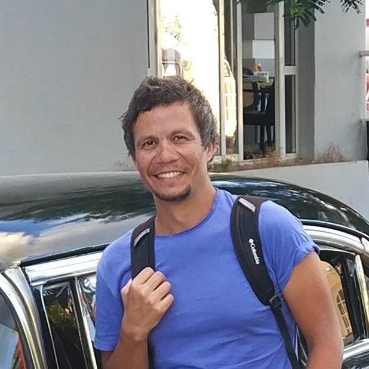

Arif Kürsad Kavas
Experience
Education
M.Sc Electronics Engineering -
Istanbul Technical University
Tech Stack
Matlab
Digital Signal Processing
DSP
C
CPM
GMSK
AIS
Description
MSc with a focus on wireless communication. Graduation work on modelling and realization of a GMSK modem with one bit differential detection. Aimed to be used on AIS for the sea vessels.
B.Sc Electronics Engineering -
Yeditepe University
Tech Stack
High Frequeny Electronics
Logic Circuits
Solid State Physics
Quantum Optoelectronics
Electromagnetics
Description
Graduation work was about design of a twin tee notch filter for S3 signalling system
High School -
Bornova Anadolu Lisesi
Description
High School Education